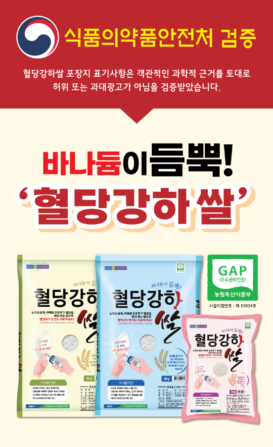
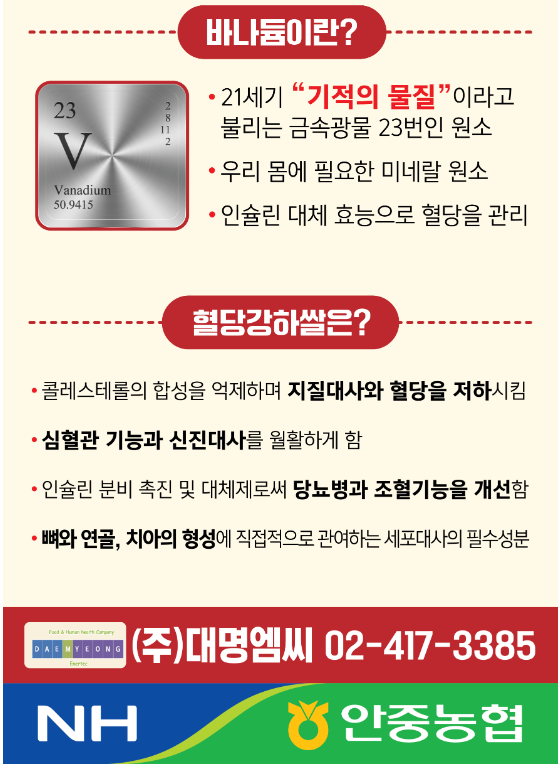
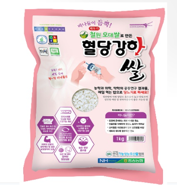
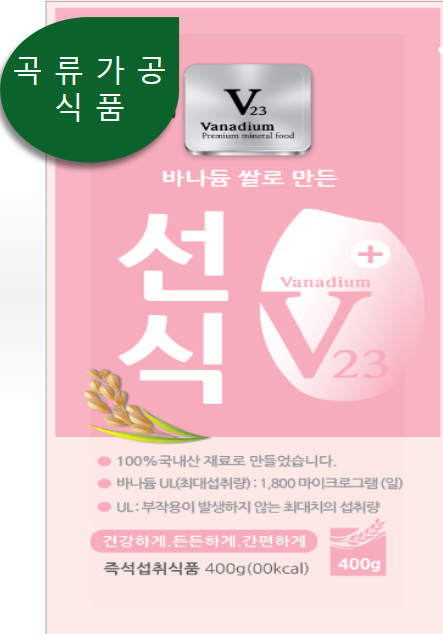
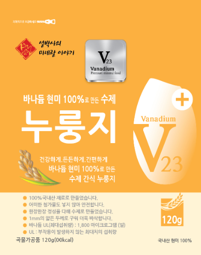
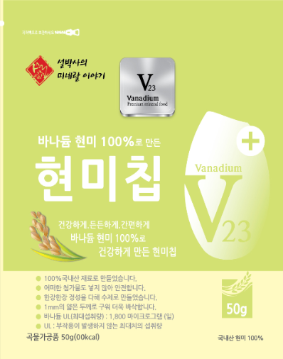
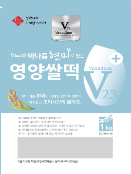
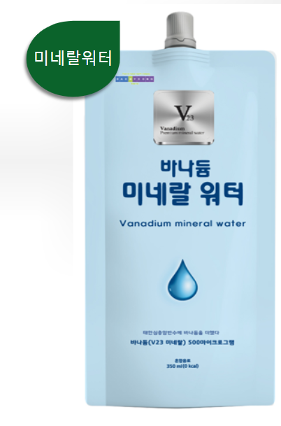

건강한 한끼 식사 혈당강하쌀 바나듐이 듬뿍들어 혈당조절은 물론합병증 완화에도 효과적!    혈당강하쌀은 당뇨병인들의 바람인 인체 필수 3대영양소 중 가장 큰 비중을 차지하는 탄수화물(밥)을 섭취하여 혈당강하 효과 및 당뇨 치료와 동시에 고지혈증을 개선해 성인병 예방 및 일반인의 면역력 증진에 도움을 주기 위해 만든 쌀입니다. !
신규 추진중인 사업 Vanadium mineral future plan biz      현재 개발완료 및 테스트 진행중인 상품들이며 1,2차 테스트 이후 국내유통을 거쳐 판매될 예정